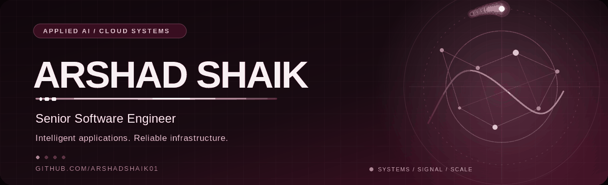
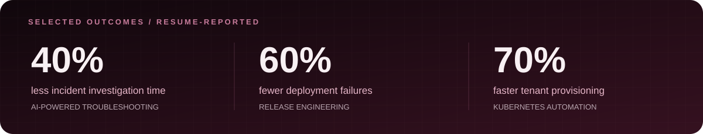
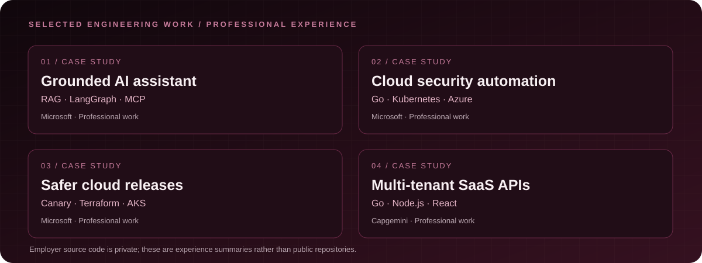
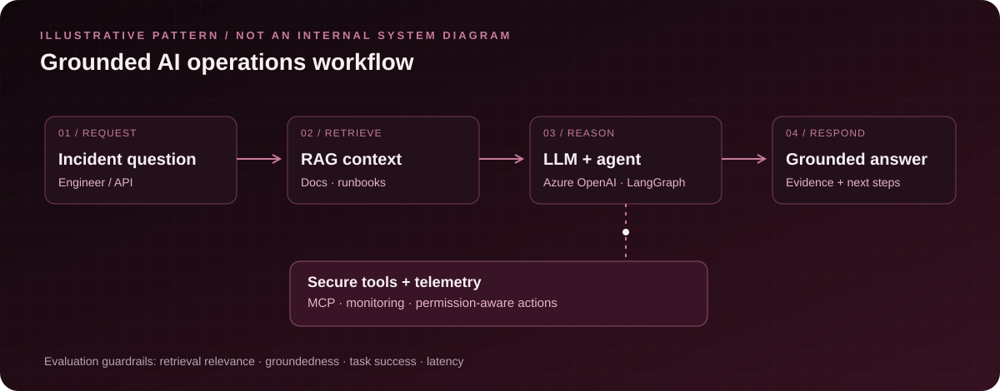
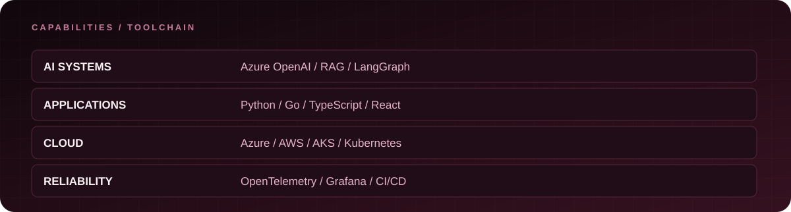

SENIOR SOFTWARE ENGINEER · Applied AI · Cloud Platforms · Distributed Systems
Building grounded AI applications and dependable infrastructure, with engineering rigor from prototype to production.
01 / Engineering, with intent
I'm Arshad Shaik — a Senior Software Engineer with 5+ years building SaaS platforms, full-stack systems, cloud-native infrastructure, and applied AI solutions. I work across Python, Go, TypeScript, React, Kubernetes, RAG, and AI agents, prioritizing production reliability, security, and measurable outcomes.

02 / Selected engineering work

Professional experience, not public source code. These are engineering highlights from Microsoft and Capgemini; they are not links to proprietary employer repositories.
01 · Grounded cloud-operations assistant — Microsoft
Developed an AI-assisted troubleshooting workflow using Python, FastAPI, Azure OpenAI, and RAG over technical documentation, incident histories, and runbooks. Built agent workflows with LangChain, LangGraph, and MCP, including evaluation of retrieval and response quality. Reported impact: ~40% shorter incident investigations.
02 · Kubernetes security automation — Microsoft
Developed a Go-based admission controller and operator using Azure Key Vault and Azure Policy for secret lifecycle and policy enforcement. Supported cloud provisioning using AKS, Terraform, and Bicep.
03 · Reliable release engineering — Microsoft
Improved canary delivery, readiness gates, and observability using Prometheus, Grafana, and OpenTelemetry. Reported outcomes include 60% fewer deployment failures and 30% shorter release lead time.
04 · Multi-tenant SaaS services — Capgemini
Built APIs with Go and Node.js, supporting CRM/CMS integrations and full-stack features using TypeScript and React. Reported peak handling of 50,000 requests/minute.
03 / How I approach AI systems

This is a conceptual reference architecture based on technologies I work with, not an internal Microsoft system diagram.
My design priorities are grounded answers, authorization-aware tool execution, observable workflows, and evaluations for retrieval quality, agent task success, and inference latency.
04 / Technology landscape

| Area | Technologies |
|---|---|
| Languages | Python Go TypeScript JavaScript SQL Bash |
| AI engineering | Azure OpenAI RAG LangChain LangGraph MCP PyTorch LLM Evaluation Vector Search |
| Applications | FastAPI Node.js React REST GraphQL |
| Cloud & infrastructure | Azure AWS AKS EKS Kubernetes Docker Terraform Bicep |
| Data & observability | PostgreSQL MongoDB Snowflake OpenTelemetry Prometheus Grafana |
| Delivery & testing | CI/CD Azure DevOps Jest Supertest Cypress |
05 / Future open-source build concepts
These are ideas for public portfolio projects, not completed projects or published repositories:
- RAG Reliability Lab — An evaluation harness comparing retrieval quality, groundedness, and latency across retrieval strategies.
- Agent Tool Security Playground — A sandbox to explore MCP tool permissions, safe execution, and audit trails.
- Cloud Incident Simulator — A reproducible incident environment for testing agent-assisted diagnosis and operational runbooks.
If I release any of these projects, I will link to the actual source repositories here.
06 / Experience & education
Microsoft — Senior Software Engineer · Aug 2024–Present
Capgemini — Software Engineer · Oct 2020–Jul 2023
Arizona State University — Master's in Information Technology
Credentials listed on my resume: Microsoft Azure AI Cloud Developer Associate; Microsoft Azure Administrator Associate (AZ-104). Verification links can be added when available.
07 / GitHub activity
The animation above is decorative and does not represent actual commit counts or contribution history. See my real GitHub contributions.
Thoughtful systems. Measurable outcomes. Reliable delivery.